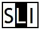

Latipedia - Wikipedia nas linguas románicas
Procurar na Wikipedia en linguas románicas e inglés • Artigos por lingua (xullo 2022):
- GL Galego (galego): 185.917
- FR Francés (français): 2.435.265
- OC Occitano (occitan): 87.371
- PMS Piemontés (Piemontèis): 66.330
- PT Portugués (português): 1.093.581
- AST Asturiano (asturianu): 129.758
- IT Italiano (italiano): 1.761.158
- LA Latín (Latina): 137.056
- ES Español (español): 1.786.723
- AN Aragonés (aragonés): 41.898
- SCN Siciliano (sicilianu): 26.203
- LMO Lombardo (lombard): 51.745
- CA Catalán (català): 702.882
- EN Inglés (English): 6.533.313
- NAP Napolitano (Napulitano): 14.730
- RO Romanés (româna): 431.577
Procurar na Latipedia:
Lista de Wikipedias